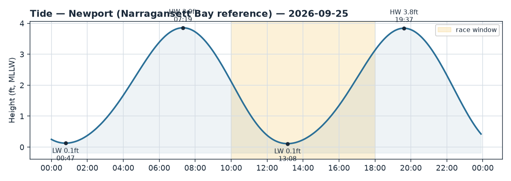
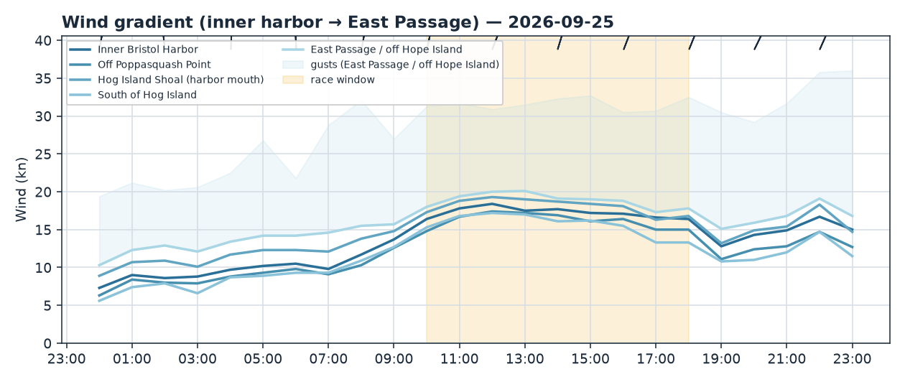
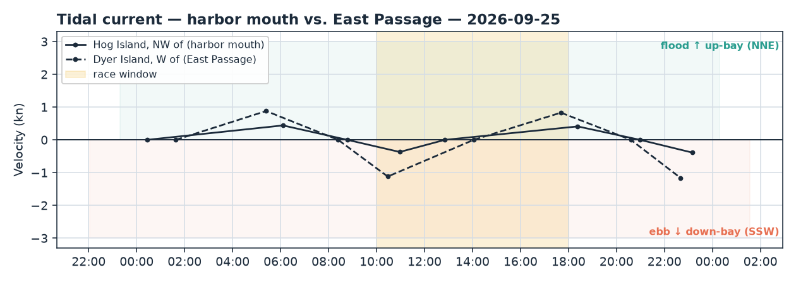

Bristol Harbor · Rhode Island
Fri 25 Sep 2026 · Daysail
A brisk, cool northerly — spirited sailing for the experienced crew, and get out early before afternoon rain.
The day
This is a big-breeze, autumn kind of day — fun if you like to be powered up, but honestly on the edge for a mellow family outing. A cool, gusty northerly is blowing down the bay in the high teens with gusts pushing into the low 30s, and rain is moving in as the afternoon wears on. If you've got an able boat and crew who like a little spray, the morning could be a great, brisk sail. If you were hoping for a lazy drift, this isn't that day — save it for a calmer one.
Wind
The breeze is up and it's staying up — steady 16–19 kt from the N/NNE across the whole harbor and out toward the mouth, with gusts to around 30–32 kt. That's genuine powered-up, reef-it sailing, not a gentle cruise. The live anemometers back it up: Conimicut up-bay is already averaging ~18 kt and Newport near the mouth ~15, gusting into the low 20s, and the forecast agrees closely — so treat the strength as a safe bet, not a maybe.
Because it's a northerly off the land, expect it to be shifty and puffy — the wind will come in surges and swing around a bit, so keep a hand on the sheet. There's a bit more pressure out toward the harbor mouth and the East Passage, and a softer, gustier patch tucked in behind the Poppasquash shore on the west side where the land breaks up the flow — a good spot to duck if you want a breather. Best window is the late morning into early afternoon, before the rain arrives.
Tide & current
High water was around 07:19, then a very low low at 13:08 (about 0.1 ft) — that's a skinny tide, so give the shallow edges of the harbor and any near-shore rocks a wide berth around midday. High again in the evening at 19:37.
The good news for comfort: through the morning the ebb runs seaward (SSW), the same direction the wind is blowing, so the water stays relatively flat. Things change late in the day — the flood turns back up-bay (NNE) into the wind starting around 17:40 out in the Passage and 18:23 at the harbor mouth, so if you're still out near the mouth toward evening expect the chop to build as wind fights tide. One more reason to make this a morning sail.
Good to know
Dress warm — it's a raw one, only 59–64°F with mostly cloudy skies, and there's an 85% chance of rain building through the day (light early, likely by afternoon). Bring foul-weather gear and layers; wet plus wind plus cool air adds up fast. With gusts into the low 30s, this is a life-jackets-on, everyone-clipped-in kind of day — keep the crew small and capable. Plan to be out by late morning and back on the mooring by early-to-mid afternoon, ahead of both the rain and the evening wind-against-tide slop. Have fun, but respect the breeze on this one.


